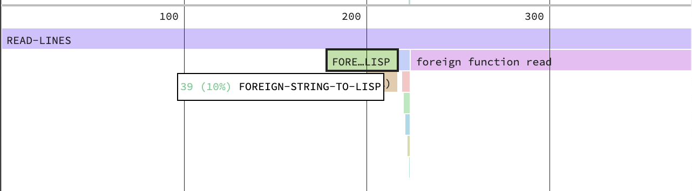

Lisp Project of the Day
osicat
You can support this project by donating at:


osicat
| Documentation | 🤨 |
| Docstrings | 😀 |
| Tests | 😀 |
| Examples | 🥺 |
| RepositoryActivity | 🤨 |
| CI | 😀 |
This is a library, created by @nsiivola. It is well suited if you need to call POSIX API. Osicat has outdated documentation but it is has docstring and the code is well structured.
Using osicat, you can work with files and make other system calls.
Here is an example of how you can get information about files:
POFTHEDAY> (osicat:file-kind "/tmp")
:SYMBOLIC-LINK
POFTHEDAY> (osicat:read-link "/tmp")
#P"private/tmp"
POFTHEDAY> (osicat:file-permissions "/tmp")
(:USER-READ :USER-WRITE :USER-EXEC :GROUP-READ
:GROUP-WRITE :GROUP-EXEC :OTHER-READ
:OTHER-WRITE :OTHER-EXEC :STICKY)I've never used osicat before. When preparing this review, I noticed it has functions to make such system calls like open, read, close and I wondered if it will be faster to implement such a handy operation like reading lines from a file using these calls instead of streams.
So, let's compare the performance of the native Common Lisp streams and raw POSIX calls when we want to read all lines of the large log file.
I have a 26M log file /var/log/install.log on my disk.
As a baseline, we'll take the performance of the uiop:read-file-lines:
POFTHEDAY> (time
(length
(uiop:read-file-lines *filename*)))
Evaluation took:
0.610 seconds of real time
0.610132 seconds of total run time (0.549502 user, 0.060630 system)
[ Run times consist of 0.119 seconds GC time, and 0.492 seconds non-GC time. ]
100.00% CPU
1,346,441,256 processor cycles
300,767,776 bytes consed
76560 ;; This is the number of linesHere is how we can open a file and read a piece into the buffer, using POSIX system calls:
POFTHEDAY> (defvar *filename* "/var/log/install.log")
POFTHEDAY> (defparameter *fd* (osicat-posix:open *filename*
osicat-posix::o-rdonly))
POFTHEDAY> (cffi:with-foreign-pointer-as-string ((buf buf-size) 1024)
(osicat-posix:read *fd* buf buf-size))
"Feb 25 09:58:02 localhost opendirectoryd[231]: opendirectoryd (build 692.000) launched - installer mode
Feb 25 09:58:02 localhost opendirectoryd[231]: [default] Failed to open file <private> [2: No such file or directory]
Feb 25 09:58:03 localhost opendirectoryd[231]: [default] Initialize trigger support
Feb 25 09:58:03 localhost opendirectoryd[231]: [default] Failed to open file <private> [2: No such file or directory]
Feb 25 09:58:03 localhost opendirectoryd[231]: [default] Failed to open file <private> [2: No such file or directory]
Feb 25 09:58:03 localhost opendirectoryd[231]: [default] created endpoint for mach service 'com.apple.private.opendirectoryd.rpc'
Feb 25 09:58:03 localhost opendirectoryd[231]: [session] Registered RPC over XPC 'reset_cache' for service 'com.apple.private.opendirectoryd.rpc'
Feb 25 09:58:03 localhost opendirectoryd[231]: [session] Registered RPC over XPC 'reset_online' for service 'com.apple.private.opendirectoryd.rpc'
Feb 25 09:58:03 localhost opendirectoryd[231]: [session] Re"But we want to read a string, separated by newlines. In this scenario, code will be more complex:
(defun read-lines (filename &key (separator #\Newline))
(declare (optimize (speed 3) (debug 0) (safety 0))
(let ((fd (osicat-posix:open filename
osicat-posix::o-rdonly))
(current-string "")
(separator (char-code separator)))
(uiop:while-collecting (collect-string)
(unwind-protect
(cffi:with-foreign-pointer (buf 1024 buf-size)
(flet ((collect-lines (num-bytes)
(loop with begin of-type fixnum = 0
for offset of-type fixnum from 0 below num-bytes
for char = (cffi:mem-ref buf :unsigned-char offset)
when (= char separator)
do (let ((part (cffi:foreign-string-to-lisp
buf
:offset begin
:count (- offset begin))))
(setf begin (1+ offset))
(cond ((zerop (length current-string))
(collect-string part))
(t
(collect-string
(concatenate 'string part))
(setf current-string ""))))
finally (unless (= offset num-bytes)
(setf current-string
(concatenate 'string
current-string
(cffi:foreign-string-to-lisp
buf
:offset begin
:count (- offset begin))))))))
(loop for num-bytes of-type fixnum = (osicat-posix:read fd buf buf-size)
while (not (zerop num-bytes))
do (collect-lines num-bytes)
finally (when (not (zerop (length current-string)))
(collect-string current-string))))))
(osicat-posix:close fd))))I tried to put proper type declarations, and performance is 2.3 times faster than uiop:read-file-lines:
POFTHEDAY> (time (length (read-lines *filename*)))
Evaluation took:
0.233 seconds of real time
0.232355 seconds of total run time (0.203830 user, 0.028525 system)
[ Run times consist of 0.036 seconds GC time, and 0.197 seconds non-GC time. ]
99.57% CPU
514,348,582 processor cycles
87,868,848 bytes consed
76560Now the sad part of this story. If we compare performance with such interpreted language as Python, then Python will be 4.5 times faster than my optimized function :(
In [1]: def read_lines(filename):
...: l = []
...: with open(filename) as f:
...: for line in f:
...: l.append(line)
...: return l
In [2]: def count_lines(filename):
...: return len(read_lines(filename))
In [3]: %timeit count_lines("/var/log/install.log")
55.5 ms ± 3.94 ms per loop (mean ± std. dev. of 7 runs, 10 loops each)CFFI uses Babel to convert bytes to string but makes few unnecessary calls.
I tried to extract UTF-8 decoder from the Babel into a single function, but it's internals too complex, to finish this task in one evening.
If somebody knows fast Common Lisp implementation of the UTF-8 decoder, let me know and I'll update my article with new code. Probably trivial-utf-8:utf-8-bytes-to-string will do the job if I'll modify it to read bytes from the alien pointer?
Update 1
I've runned the code under a SBCL's statistical profiler and build this flamegraph:

It shows that:
- 50% of time wasted in my function read-line
- 10% is utf-8 decoding
- 40% – in a "read" syscall.
This is strange, because when I remove all code which converts utf-8 and just reads whole file piece by piece it takes 25-30ms only.
This can be improved if I'll use 10kb buffer instead of 1kb. In this case reading will take 7ms.
Also, I found that the most consing occur in the cffi:foreign-string-to-lisp call.
Update 2
@luismbo found that CPython uses a shortcut trick to not decode string if it consists of ASCII characters. That is why it can be more performant than my Common Lisp read-lines function.
Brought to you by 40Ants under